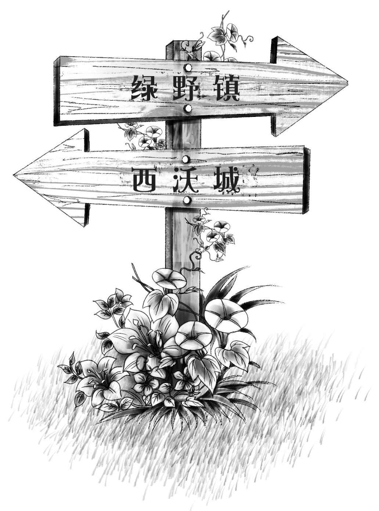

Night Is Turned into Day
很快，孩子们走出镇子，来到了郊外的大路上。一轮满月升上天空，在皎洁的月光映衬下，马路显得异常清晰。
“我们得快点儿走，”亨利说，“但愿面包师和他妻子别醒，不然就会发现我们逃跑了。”
于是，他们沿着大路飞快地前进。
“班尼很沉吧？”维莉问。
“还好，我能抱着他走好长一段路呢！”亨利答道。
不过杰西说：“要想走得更快点，就非得叫醒班尼了。咱们牵着他走才能加快速度。”
亨利听了这话，便停下来，放下了班尼。
“快醒醒，班尼，”他说，“你得自己走路啦！”
“别吵我！”班尼还想继续睡。
“让我来试试吧！”维莉转向弟弟，“班尼，从现在开始，你就是一头小棕熊啦！你必须赶快行动起来，去寻找一张温暖舒适的小床。亨利和杰西也会帮你，我们一起去找小床睡觉，好不好？”
班尼一下子就睁开了惺忪的睡眼，他最喜欢假扮小棕熊的游戏了。亨利和杰西一人牵着他的一只手，继续往前走。
不一会儿，他们路过了几家农舍，但是屋子里黑灯瞎火，悄无声息，一个人影也没有。他们不停地走啊，走啊，直到红彤彤的太阳升起来。
“咱们得找个地方睡一会儿，”杰西说，“我累坏了！”
班尼已经睡着了，亨利又把他抱了起来。两个女孩开始四处寻找睡觉的地方。
维莉终于发现了一个好去处：“看那边！”她指向一个大草垛，那草垛立在一家农舍附近的田地里。
“真不错，维莉！”亨利赞道，“很大的草垛呢！”
他们穿过田地，跑向农舍，接着跃过一条小溪，来到草垛旁。一路上，亨利都紧紧抱着班尼。
杰西很快就在草垛上给班尼垒好了一个舒适的小窝。他们刚把小家伙放进窝里，他马上又睡着了。其他几个孩子也各自做好了自己的小窝。
“晚安！”亨利笑着说。
“应该是‘早安’，”杰西说，“我们白天睡觉，晚上赶路。等天黑之后，咱们再接着走。”
孩子们实在是困极了，很快就进入了梦乡。他们足足睡了一整天，醒来的时候，夜幕已经降临了。
班尼睁开了眼睛：“杰西，我饿了，我想吃东西。”
“可怜的班尼，”亨利说，“我们这就吃晚饭。”
杰西拿出一条面包，切成四块。很快，面包就被消灭干净了。
“我还想喝水！”班尼可怜巴巴地说。
“现在可不行，”亨利说，“咱们得等到天黑后才能去找水喝。农舍旁边有个抽水机，可是如果我们现在离开草垛，立刻就会被人发现的。”
就这样，他们一直等到天完全黑了，才从草垛里爬出来，悄悄地朝农舍走去。农舍四周又暗又静，抽水机就在旁边。亨利尽量悄悄地抽水，连母鸡和小鸡都没有惊动。

“我想用杯子喝水。”班尼说。
“没有杯子，班尼，”亨利低声说，“你可以扮成一匹小马驹儿，用嘴直接喝啊！”
这下可乐坏了班尼，他不再吵着要杯子了。亨利抽了很多水，井水又凉又甜，班尼喝了个饱。孩子们喝完水，便穿过田野，朝着大路跑去。
“如果听到有人来了，”杰西提醒大家，“我们就赶紧躲到灌木丛后面去。”
话音未落，孩子们就听见一辆马车正朝着他们驶过来。
“别出声，班尼！”亨利低声叮嘱道，“一句话也别说。”
时间紧迫，孩子们麻利地躲到了灌木丛后面。马车越来越近，不一会儿就驶上了山坡。有人在说话——是面包师！
“那几个小鬼到底跑到哪儿去了？”面包师恶狠狠地说，“我觉得他们肯定跑不到西沃城。如果在绿野镇找不到他们，我们就回去吧！”
“好！”他妻子说，“反正我也不想找他们，我讨厌小孩儿。不过再找一会儿吧！就在绿野镇找，不到别的地方去了。”
孩子们胆颤心惊地盯着面包师和他妻子，直到马车走远，他们才从灌木丛后面钻出来，面面相觑。
“天哪，幸好没被他们发现！”亨利说，“班尼真乖，刚才一声都没吭。”
“咱们千万别去绿野镇！”
“可是我们也不知道去西沃城有多远啊！”杰西说。
不管有多远，知道面包师找不到他们，孩子们就放心了。他们沿着大路高兴地走着，一直到凌晨两点，才在路旁发现了路标。
这时，月亮从云彩后面出来了。借着月光，亨利看清了路标。
“路标上标明绿野镇在这边，”亨利说，“另一个路标指向西沃城。要是我们不想去绿野镇的话，就沿着这条路去西沃城吧！”
他们走了好久，连一个人影都没见着。
“大概没多少人走这条路，”亨利说，“这样也好，咱们更安全了。”
“听！”班尼突然说，“有动静！”
“我也听到了！”维莉说。
孩子们一动不动，静静地听着——是流水的声音。
“我想喝水，亨利！”班尼说。
“我也渴了。走，咱们去看看水源在哪儿。”亨利说。
很快，孩子们就在路边发现了一个饮水的喷泉。
“哇哦，好精妙的设计！”亨利跑了过去，“你们看！人喝水的地方在最上面，中间是饮马的，最下面是给狗狗喝水的。”
孩子们喝了个痛快，水清凉甘冽，好喝极了。
“我困了。”班尼咕哝道。
杰西笑着说：“很快你就能睡觉了。”
这时，亨利发现喷泉旁边的草丛中隐藏着一条小路。
“你们看！”他喊道，“这条路通往树林，我们可以去树林里露宿呢！”
“好地方！”杰西说，“来这儿的人应该不多，看看路上的草就知道了。”说完，他们沿着深深的草丛朝树林里走去。
“离喝水的喷泉也不远呢！”维莉补充道。
“没错！”亨利大声说，“你想得真周到，维莉。”
杰西擦了擦汗：“天还没亮就这么热了！”
“热才好呢！”亨利说，“露宿怕的就是天太冷。大家赶紧去找点儿松针，铺在地上当褥子。”
孩子们钻到树林里，很快就铺好了四张松针床。
“只求千万别下雨！”杰西躺了下来。
她望了望天空。
“月亮被云彩遮住了，看样子很可能会下雨。”
她一边想，一边闭上了眼睛，然后再也不想睁开了。
天上的云越积越多，不一会儿就刮起了风。可是，闪电和雷鸣都没把四个沉睡中的孩子惊醒，他们实在太困了。